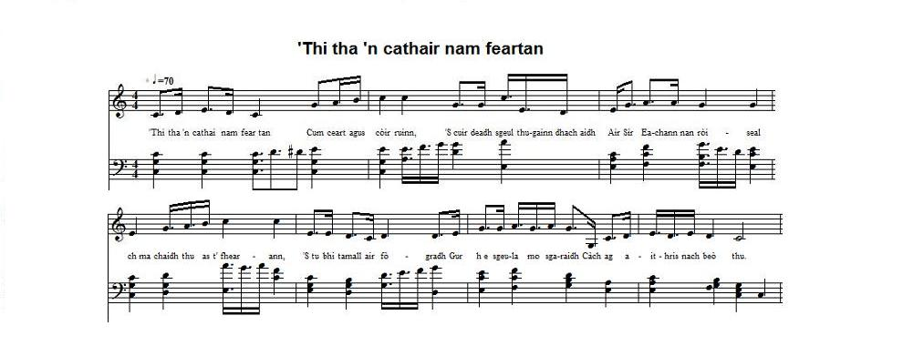

Cumha do Shir Eachann MacIlleathain
Lament for Sir Hector McLean - Elégie de Sir Hector McLean
Ascribed to Mairearad Ni'c Lachainn (Margaret Nin Lachlan)
Source of the text: "Filidh nam Beann": The Mountain Songster. The Choicest Collection of Original and Selected Gaelic Songs now known".A 92 page volume edited in 1860 (as stated in the National Library of Scotland catalogue) and published in Glasgow by Waitt and Stewart.
The collator of these 39 Gaelic songs is unknown and there is no introduction to the volume.
The present elegy is attributed to Mairearad Ni'c Lachainn on page 42.

'Thi tha'n cathair * Do Shir Eachann * A Righ tha an Cathair
Click to hear the melodies (sequenced by Christian Souchon)
|
To the tune
Donald Sinclair's singing of the same song was still recorded thrice, by Dr John McInnes: in 1964, Track ID 102594; on 1966.12.02, Track ID 64944; and in 1968, Track ID 72024. |
A propos de la mélodie
Donald Sinclair enregistra le même chant trois fois encore, pour le Dr John McInnes: en 1964, ID de piste 102594; le 2.12.1966, ID de piste 64944; et en 1968, ID 72024. |

|
LAMENT FOR SIR HECTOR MAC LEAN. [1]
By Margaret Nic Lachlan, of Mull [2] 1. You were the siege of all virtues. You maintained with kindness our rights, The end of the story, so we hoped Would bring Sir Hector back to us: For you should have left yon country Of your provisory exile. But the story of your absence Ends up, I was told, with your death. 2. O Sir Hector, a coat-of-mails, A swift galley, a streaming flag! With, behind a handsome curtain, A whole host of countless heroes; A great many precious young men You would have led to the battle — As the first captain of Scotland, A gorgeous sight it would have been! 3. You were the tall tree in the grove Which is the forest of the Gaels, And you were the fearless hero, The shield at Prince Charles' elbow: You were the key to our relief, In the tide of trying events - Your prudence and understanding Levelled the most uneven paths. 4. For you were a foster-brother, To the Queen who loved you so much — And her own brother's bodyguard, You were a rib bone in his chest. [3] You lost both heirloom and country, Harassment stripped you of the rest. [4] Since you stood loyal to your King, You were deprived of your heirship. 5. How they miss your noble blood, Those in the young and kingly flock! All those lion cubs whose ardour Is in tune with your bravery: All of them would, in thousands, Follow you to the bloody fray: Where cowards would take to their heels, Be sure, in the field they would stay. 6. Think of the day of Culloden, A calamitous day for the Gaels, And the first English victory: We got in the grip of the foe. If you had been in our midst When they vomited destruction, No Englishman would have unscathed Returned home on that occasion. 7. Instead, in many burnt castles, Of laments for precious losses, Toasts and cheers would have been heard And streams of wine would have been poured — We were not harried by Black-Hats. [5] What a pity that you were not In the strait of Corryweckan With filling tide in full career. [6] 8. My heart is emptying: a flask Whose moistening cork crumbles away; Or a deer in the wilderness: Drained are its veins and arteries: These hardly fitting images Occur as fast as troop horses; However, I won't stop saying: Your long absence causes my pain. 9. Crushed up like pups against each other Are now our lofty noble men: Greyhounds that are kept on a leash— And though the whip is cruel and hard; They suffered every threat — And the scourging sticks of the beasts, For they were in wait of the day When you would come and untie them. 10. The sheep stop lamenting When the blooming spring approaches: But I lament about people Especially one of them: His name is Allan, son of Charles — [7] The only survivor of your race, Look as I will In these eddies of affliction. 11. On us misfortune pounced Like storms deluging in winter! There run the black and grey horses Treading underfoot everything! And you could not return to Iona, The isle of your bold ancestry Where are buried seven kings; [8] A cup full of noble blood. 12. Be silent Clan Lachlan, begone! [9] Since you are forced to move away! No evidence in their favour But it is too risky to stay: They have knocked down your Captain Who was shoulder to shoulder with you; And now they will be lurking Till fatigue drives you to the tomb. 13. Methinks it's time I kept silent — So I will close this list of claims: My hope is in Jesus alone: Maybe what I heard is not true; Maybe we'll see our own McLean Yet coming across the ocean. Who knows? Maybe he's on his way... It will be a dazzling vision! Translated by Christian Souchon (c) 2015 |
DO SHIR EACHANN MAC-'ILLEAIN. [1]
Le Mairearad Ni'-Lachuinn, am Muile [2] 1. 'Thi tha 'n cathair nam feartan Cum ceart agus còir ruinn, 'S cuir deadh sgeul thugainn dhachaidh Air Sìr Eachann nan ròiseal: 'S ach ma chaidh thu as t' fhearann, 'S tu bhi tamall air fògradh Gur h-e sgeula mo sgaraidh Càch ag aithris nach beò thu. 2. A Shìr Eachainn nan lùireach, Nan long siùbhlach, 's nam bratach, 'S nan cùirteinean rìomhach, Gu'm bu lionmhor do ghaisgich; 'S a liuthad fleasgach mòr, prìseil 'Thèid a sios leat gu batailt — Bhiodh tu 'n toiseach fir Alba, 'S bu mhòr t'armailt ri'm faicinn. 3. 'S tu 'chraobh is àird' anns an doire Th' ann an coille nan Gàidheal, Agus connspunn gun ghiorag, Sgiath air uilinn Phrionns' Teàrlach: Bu tu iuchair an fhuasglaidh, 'N uair bu chruaidh, no bu chàs e - Meud do ghliocas 's do chéille Bheireadh réidh as gach càs thu. 4. Tha thu 'd'dhalt' aig a' Bha-righ'nn, 'S mòr an gràdh thug i fèin duit — Mar lèine-chneis aig a bràthair, 'S mar aisiun chnàmha nach trèigeadh. [3] Chaill thu t' oighreachd, a's t'fhearann, 'S thug thu thairis gu lèir iad, [4] Airson seasamh gu rìoghail, 'S rinn do shinnsearachd fèin sud. 5. Tha mo chion air an fhìor-fhuil — Og rioghail na h-ealtainn; Agus cuilean an leòmhainn, 'S òg a dh' fhòghlum thu gaisgeadh: Ursann chath thu roimh mhìltean, 'N àm dol sios ann am batailt; 'S b' urra shuidheachadh blàir thu Ged robh càch ann an gealtachd. 6. Dh' aithnich latha Chuilodair Gu'm bu dosgach na Gàidheil, 'Sgu'u robh thus' ann an Sasunn An dèigh do ghlacadh le d' nàmhaid Ach na 'm bitheadh tu aca Mu'n do chaileadh an àrfhaich, Cha rachadh fir Shasunn Slàn dhachaidh gu'n àite. 7. Tha do chaistealan geala, 'S do thalachan prìseil, Far 'm biodh òl agus aighear Aig luchd-caithidh an fhiona — O! luchd nan adaichean dubha, [5] Sgeul tha dubhach le m' inntinn, Nach robh sibh anns a' Chaillich [6] Fo chaithream an lionadh. 8. Tha mo chridh' air a thràghadh Mar àrcan a fhliuchadh, No mar fhiadh anns an fhàsach A ghearrta gach cuisle: Gach rannaigheachd is cruaidh leinn, 'Tigh'nn cho luath ri each trupa; 'S gu bheìl cuid ac' ag ràdhtain, Fàth mo chràidh ! nach till thusa. 9. 'S tha do mheasana guaille, 'S do dhaoin'-uaisle le chéile, 'S tha do mhial-choin gun fhuasgladh — Snaom-chruaidh air an èill se'; Iad a' fulang gach mùiseag — Slat sgiùrsaidh nam béistean, 'S iad a' feitheamh na h-uaire Gus am fuasgail thu fèin orr'. 10. Cha'n e cumha ann caorach Tha mi 'eaoineadh 's an earrach: Ach ri iargain, nan daoine Ris am faodainn mo ghearan: 'S ann diubh Ailean Mac-Theàrlaich — [7] B' e mo chràdh do chall fola, 'S i 'n a ruith as gach taobh dhiot 'N a caochana meara. 11. Ormsa thainig an t-ànradh 'An tùs geamhraidh ra gaillinn! Na h-eich ghorm agus dhubha 'G ad bhruthadh, 's 'g ad phronnadh; 'S nach tug iad do dh' Ì thu Mar ri sinns'reachd do shean'ar — Far 'n robh cuirp nan seachd righrean [8] Do 'n fhìor-fhuil bu ghlaine. 12. S ann a theireadh Clann-Lachainn [9] Nach fanadh iad uaitse, Ged nach d'rinn iad a dhearbhadh 'An àm t-fhaicinn 's a chruaidh-chas: 'S ann a leagadh an Caiptein A bh' agad li d' ghuallainn; 'S gu'n d'fhuirich thu faisg air Gus 'n do threachaileadh uaigh dha. 13.'S mithich dhomhsa bhi sàmhach — Sgur do dh' àireamh nan uaislean: Tha mo dhòchas 'an Iosa Nach fior mar a chualas; Ach gu'n tig Mac-'IIleain Nall fhathasd thar chuantan, 'S gu'n tèid sinn na chòdhail Glè dheònach 's an uair sinn. |
A SIR HECTOR MCLEAN. [1]
par Marguerite NicLachlan de Mull [2] 1. Modèle des vertus, Ta juste bienveillance Nous devait ton retour Près de nous, Sir Hector: Ton exil achevé Tu quitterais la France. Or on dit que l'absence A fait place à la mort. 2. Si vers toi, leur manteau, Leur vaisseau, l'oriflamme, Leur courtine, tant de Héros avaient couru, Ce peuple précieux - Dévoué corps et âme — Sous le premier chef de L'Ecosse aurait vaincu! 3. Tu fus l'arbre altier Dans la forêt gaëlle, Impavide héros, Et de Charles l'écu: La clé dont s'ouvrent les Portes les plus rebelles - Ton esprit nivelait Les pics les plus ardus. 4. Toi dont la sœur de lait Fut jadis notre reine Dont tu servis le frère En bon garde du corps, [3] Toi, privé d'héritage Au profit de la haine, [4] L'injure faite au roi, Te pesait plus encor. 5. Le noble sang coulant En tes royales veines, Fait défaut aux lionceaux En cage confinés: Les milliers de héros Qu'aux batailles tu mènes Ne cèdent pas un pouce Où d'autres flancheraient. 6. Et ce fut Culloden, Gaël, ton crépuscule Où s'assouvit la haine Des arrogants Saxons. Mais, toi présent, aucun De ces couards ridicules Ne serait retourné Indemne en sa maison. 7. Des châteaux consumés Montent d'augustes plaintes: Finies vos libations Joyeuses assemblées!— Hélas les Chapeaux-noirs, [5] T'avaient mis hors d'atteinte, Dans le Corryvreckan Quand montait la marée. [6] 8. Un flacon mal scellé, Mon pauvre cœur se vide. Un cerf dans le sous-bois Transpirant sang et eau, L'enthousiasme me fuit Tel l'étalon rapide. Ton absence est, dit-on, La cause de mes maux!. 9. Des chiots c'est ce que sont Nos vaillants gentilshommes, Ces lévriers qu'on a Fermement attachés! Subissant la menace Ils attendaient que sonne, Sous les coups de cravache L'heure où tu reviendrais. 10. Les brebis bêlent-elles Quand fleurit le printemps? Mais ma compassion: S'adresse à des humains: Alain, le fils de Charles — [7] Hors ce proche parent Tu n'as pas d'héritiers. Aveugle est le destin! 11. L'hiver et ses grands froids, Que de malheurs ils causent! Voyez ces chevaux noirs Qui broient tout sous leurs pas: L'île de tes aïeux Où sept grands rois reposent [8] De ta noble lignée, Iona, ne t'aura pas. 12. Silence, Clan-Lachlan [9] Il faut vider la place. L'adversaire a la force Et tu n'as que le droit: Après leur Capitaine A présent ils terrassent; Ceux que l'épuisement Au tombeau conduira. 13. Il est temps de me taire — J'ai terminé ma liste: Mais Jésus, j'ai l'espoir Que tout n'est que du vent; Et qu'on verra McLean Rentrer à l'improviste Voguant sur l'océan Quel merveilleux moment! Trad. Christian Souchon (c) 2015 |
|
[1] "Lament for
Sir Hector McLean of Mull
and 21st Chief of the Clan Mclean who was arrested in Edinburgh prior to the 1745 Jacobite rising and imprisoned in the Tower of London until 1747. The lament, by Mairead Ni' Lachlainn on hearing news from Paris of his death in 1750, is full of the usual panegyric images and sadness at losing a chief, particularly one who died without issue." (Comment to track 64944 of the SSS sound archive).
He was the son of Sir John McLean, 4th Baronet, whom he succeeded in 1716. In June 1745 he was in Edinburgh, and he was immediately arrested, together with his servant, on the charge of being in the French service and of enlisting men for it. He was sent to the Tower of London, where he remained until liberated by the Indemnity Act of 1747. In spite of the failure of the ‘45 Jacobite Uprising, Sir Hector remained faithful to the Stuart Cause throughout his life. He was one of the most active Jacobites in exile, and in 1749 he coordinated a plan for another Jacobite rising with Richelieu and Pâris. However the plan was not approved by James Stuart and given up by Charles. In July of 1750, Sir Hector went to Rome, where James Stuart held his exiled court. He died unmarried and without children in Paris, in January or February 1751 (in Rome, where he was buried near the Pyramid of Caius Cestos, according to other sources). [2] "The contributor talks of the poetess, Margaret, daughter of Lachlan , (Mairearad Nighean Lachlainn) and tells that she came from the common people although she was under the care of the Laird of Coll. Some said that she was fathered by one of the Laird of Coll's own people. He tells that she had a daughter and that it was she who put the tunes to her mother's poetry." (ibidem). However this ascription to Margaret Nic Lachlan is sometimes questioned : "There is a dispute as to whether [Mairearad nigh'n Lachainn] was a MacLean or a MacDonald. She lived in the Island of Mull and attained a great age. One of her poems was composed in 1702 and another in 1757 . The dates of her birth and death are not known.... [3] Dwelly's English-Gaelic dictionary translates lines 1 and 3 of stanza 4 as "you are the Queen's foster-brother... and the bodyguard of her own brother" . This cannot possibly apply to Sir Hector who was born in 1703, in Calais; rather to his father Sir John, born in 1670, who was an orphan at age 4. Queen Anne was born on 6th February 1665, and in 1771 her brothers were dead, except her half-brother, the Old Pretender (1688-1766). In 1750 (death of Sir Hector), the word "Queen" could refer to Caroline of Ansbach, who had been queen of Great Britain as the wife of King George II. She was orphaned at a young age and her guardian was King Frederick I of Prussia. But she was born in 1683 and died in 1737. As for her brother, William of Brandenburg-Ansbach, he was born in 1686. [4] Sir Hector's father, Sir John McLean of Duart was deeply involved in the 1715 rising. Therefore his estates were forfeited, enabling Archibald Campbell, the first Duke of Argyll , to become the "Lord of Mull, Morvern, and Tyrie". [5] " Black-Hats ": another name for "Red-Coats" (see Oran do'n Phrionnsa ). [6] The Strait of Corryvreckan : "Coire Bhreacain" means "the Cauldron of the Plaid", but is called " A'Chailleach" in the present poem. The translation "What a pity you were not in the Corryvreckan when the filling neap tide was in full career", for lines 6 to 8 of stanza 7, was found in Dwelly's dictionary. "Cailleach" means "Hag", "Old woman" and refers to the goddess of winter who uses the intense whirlpools and standing waves in the Corryvreckan channel, between the islands Jura and Scarba, to wash her plaid when winter approaches. Only a hero like Sir Hector could cross this stream challenging "the power of all sailing and rowing" as the old geographer Dean Monro wrote in 1594. [7] The direct line of McLean of Duart failed on the death of Sir Hector. The Baronetcy and the Family Honours devolved on the Brolas branch. Sir Hector was succeeded as Clan Chief by his third cousin, Sir Allan Maclean of Brolas, 6th Baronet. [8] On Iona Island , the ancient abbey graveyard, "Rèilig Odhrain" (cemetery of St Odhran, St Columba's uncle), contains the graves of many early Scottish, Irish, Norwegian and French Kings, especially of the kings of the 6th-8th century kingdom "Dàl Riata" (Argyll and Lochaber in Scotland and County Antrim in Ireland) and their successors. In 1549 an inventory of 48 Scottish, 8 Norwegian and 4 Irish kings was recorded. Six of the seven kings referred to in the poem could be: Kenneth I McAlpin, Donald II McConstantine, Malcolm I McDonald, Duncan I McCrinnon, Macbeth, Donald III McDonchada. The Labour Party Leader John Smith (1938-1964) is the 7th "king" mentioned by the Wikipedia article on Iona. Though Margaret Nic Lachlan was allegedly considered a witch and was therefore buried face-downwards, though the present poem, ascribed to her, relates an event occurred twenty years after her death, it is hardly probable that she had foreseen this modern development! [9] "Clan Lachlan" : John Dhu, chief of the clan MCLean in 1325 had two sons. The elder son, Lachlan Lùbanach was the ancestor of the McLean of Duart branch to whom this expression refers. |
[1] "Elégie pour
Sir Hector MacLean de Mull
et 21ème Chef du Clan Mclean qui fut arrêté à Edimbourg avant le soulèvement jacobite de 1745 et enfermé à la Tour de Londres jusqu'en 1747. Cette élégie, composée par Mairead Ni' Lachlainn, lorsqu'elle apprit la nouvelle de sa mort, à Paris, en 1750 regorge d'images panégyriques et pathétiques qui sont de mise à la mort d'un chef, surtout s'il meurt sans descendance." (Commentaire de la piste 64944 des archives sonores de la SSS).
Il s'agit du fils de Sir John Maclean, 4ème baronnet, auquel il succéda en 1716. En juin 1745, il se trouvait à Edimbourg et il fut aussitôt dénoncé par son domestique, pour intelligence avec les Français et débauchage dans leur intérêt. On l'envoya à la Tour de Londres, où il resta jusqu'à sa libération dans la cadre de l'amnistie de 1747. Malgré l'échec de la rébellion jacobite de 1745, Sir Hector resta fidèle toute sa vie à la cause des Stuart. Ce fut l'un des exilés jacobites les plus actifs et en 1749, il mit sur pied un nouveau soulèvement avec Richelieu et Pâris. Mais ce plan ne reçut pas l'aval de Jacques Stuart et fut abandonné par Charles. En juillet 1750, Sir Hector se rendit à Rome, à la cour d'exil de Jacques Stuart. Il mourut célibataire et sans enfants à Paris en janvier ou février 1751 (à Rome, où il fut enterré près de la pyramide de Caius Cestos, selon d'autres sources). [2] "Le chanteur parle de la poétesse, Marguerite, fille de Lachlan , (Mairearad Nighean Lachlainn) et dit qu'elle était d'origine populaire bien que confiée à la garde du seigneur de Coll. Certains disaient qu'elle était la fille d'un domestique du seigneur. Il ajoute qu'elle avait une fille et que c'était celle-ci qui mettait en musique les poésies de sa mère." (ibidem). Cependant cette attribution à Marguerite Nic Lachlan est discutable "On discute sur le point de savoir si [Mairearad nigh'n Lachainn] était une MacLean ou une MacDonald. Elle vécut dans l'ïle de Mull et mourut très vieille. Un de ses poèmes fut composé en 1702 et un autre en 1757 . Les dates de sa naissance et de sa mort ne sont pas connues.... [3] Le dictionnaire Anglais-Gaélique Dwelly traduit ainsi les vers 1 et 3 de la strophe 4: "tu es le frère adoptif de la Reine... et le garde du corps de son propre frère" . Cette phrase peut difficilement s'appiquer à Sir Hector né en 1703, à Calais, mais plutôt à son père Sir John, né en 1670, orphelin à l'âge de quatre ans. La reine Anne naquit le 6 février 1665 et en 1771 ses frères étaient morts, sauf son demi-frère, le Chevalier de Saint-Georges (1688-1766). En 1750 (année où mourut Sir Hector), le titre de "Reine" pouvait désigner Caroline d'Ansbach, qui avait été reine de Grande Bretagne, en tant qu'épouse du roi Georges II. Elle fut très tôt orpheline et eut pour tuteur le roi Frédéric I de Prusse. Mais elle naquit en 1683 et mourut en 1737. Son frère, Guillaume de Brandebourg-Ansbach naquit en 1686. [4] Le père de Sir Hector, Sir John McLean de Duart avait pris une part décisive au soulèvement de 1715. C'est pourquoi ses terres furent confisquées, ce qui permit à Archibald Campbell, le premier Duc d'Argyll , de devenir "Seigneur de Mull, Morvern et Tyrie". [5] " Chapeaux-Noirs ": autre nom donné aux "Habits-Rouges" (cf. Oran do'n Phrionnsa ). [6] La passe de Corryvreckan : "Coire Bhreacain" signifie "le Chaudron du Plaid", mais est appelé " A'Chailleach" dans le présent poème. La traduction "Quel dommage que tu n'aies pas été dans le Corryvreckan quand la marée de morte-eau était la plus prononcée", pour les vers 6 à 8 de la 7ème strophe, provient du dictionnaire Dwelly. "Cailleach" signifie "sorcière", "vieille femme" et désigne la divinité de l'hiver qui met à profit les tourbillons et les déferlantes du chenal de Corryvreckan, entre les îles de Jura et Scarba, pour laver son plaid à l'approche de l'hiver. Seul un Sir Hector pouvait affronter ce courant qui défiait "toute voile et toute rame", comme l'écrivait le géographe, le Doyen Monro, en 1594. [7] La lignée des McLean de Duart s'interrompit à la mort de Sir Hector. Le titre de baronnet et les armes et titres des Duart furent dévolus à la branche des Brolas. Sir Hector eut comme successeur à la tête du Clan, son cousin au troisième degré, Sir Allan Maclean de Brolas, 6ème Baronnet. [8] Dans l' île d'Iona , l'ancien cimetière de l'abbaye, le "Rèilig Odhrain" (cimetière de St Odhran, l'oncle de St Columba), abrite les tombes de nombreux anciens rois d'Ecosse, d'Irlande, de Norvège et de France, en particulier ceux de l'ancien royaume, le "Dàl Riata" qui unit du 6ème au 8ème siècle les régions d'Argyll et du Lochaber en Ecosse au comté d'Antrim en Irlande), ainsi que leurs successeurs. En 1549, on dénombra 48 rois écossais, 8 norvégiens et 4 Irlandais. Six des sept rois qu'évoque le poème pourraient être: Kenneth I McAlpin, Donald II McConstantine, Malcolm I McDonald, Duncan I McCrinnon, le fameux Macbeth et Donald III McDonchada. Le chef du Parti Travailliste, John Smith (1938-1964) est le 7ème "roi" mentionné dans l'article que Wikipédia consacre à Iona. Bien qu'on ait prétendu que Margaret Nic Lachlan était une sorcière et qu'elle fut pour cette raison ensevelie face contre terre, et bien qu'on lui attribue le présent poème qui parle d'un evénement survenu 20 ans après sa mort, il est peu probable qu'elle ait pu prévoir ce moderne avatar de la fonction royale! [9] "Clan Lachlan" : John Dhu, chef du clan MCLean en 1325 eut deux fils. L'aîné, Lachlan Lùbanach, est l'ancêtre des McLean de Duart, branche à laquelle cette expression renvoie. |
A video explaining the Corryvreckan whirlpool phenomenon